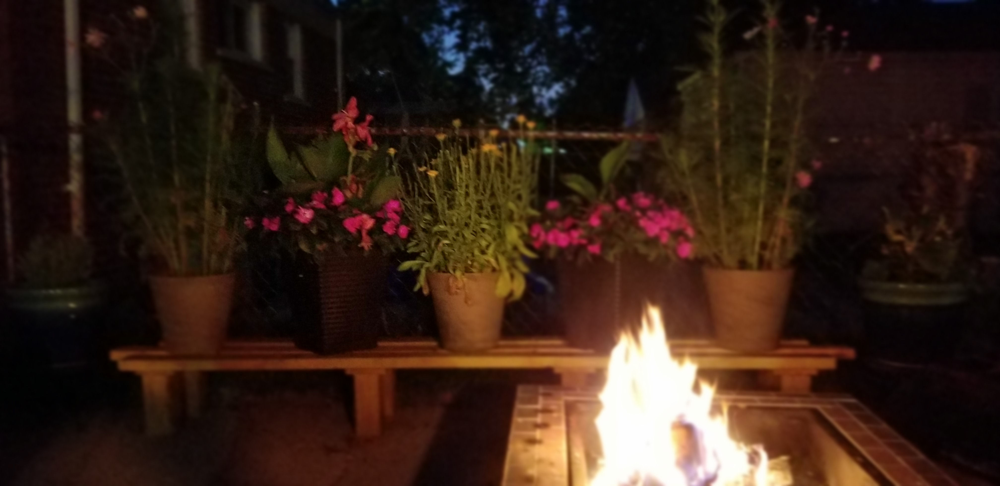

I enjoy reading, writing, baking, camping and gardening.
1. I used to do stand-up comedy. When I was 21, I took a stand-up comedy class at Joey's Comedy Club in Livonia. I then proceeded to do a round or two of stand-up in the various Michgan clubs. Until my entire savings went to Cherry-Eye surgery for my dog. And, I had to go back to my day-job after only a couple of weeks.
2. I have taken comedy writing classes at The Second City. It was a lot of fun. Even though we were in creepy rooms that sometimes didn't have chairs or tables.
3. I wrote a children's book. It's a rough draft for now called 'The Invisible Things'. The story is about Mikey, a 13 yr old boy who wakes up INVISIBLE one day. And, discovers that we share our world with creatures that Humans cannot normally see. These THINGS are all different shapes, sizes, and combinations of plants and animals. This is amazing. And, not all of them are nice. Trotter, the resident bad-guy (who looks like a pink fluffy tree) can conjure lightnight bolts like Thor, doesn't like ANY humans, and has kidnapped Mikey's little sister. Can Mikey save his sister and humanity before time runs out and he is stuck invisible FOREVER??
4. I'm an amazing baker. I put my skills to use in 2020, baking bread for 7 different families each week for the first 4 months of the COVID pandemic. I also make phenomenal baked goods. Here are some of my favorite recipes: Caramel Cheesecake Apple Dip , , Carrot Cake Cupcakes.
